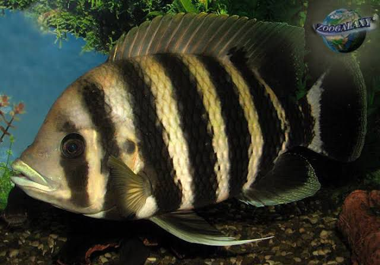
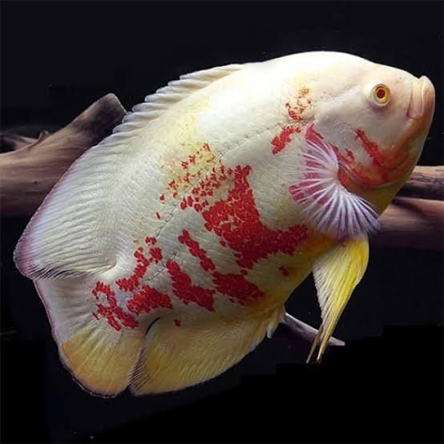
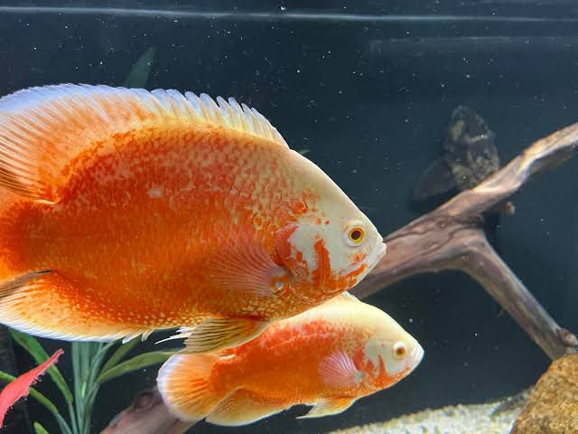
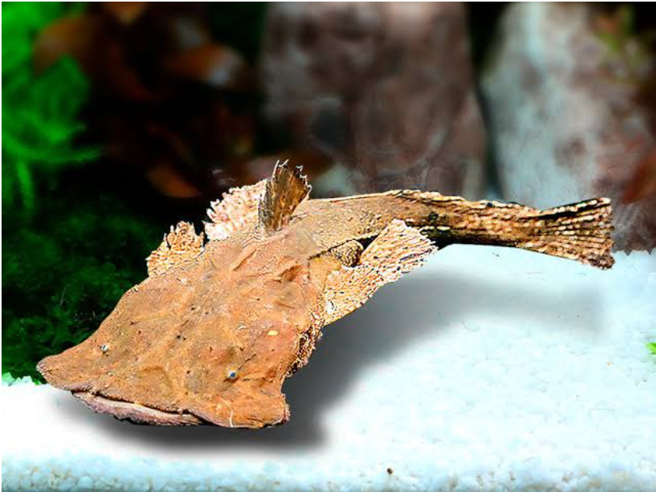

Description: The Jaguar Cichlid is a bold and aggressive freshwater fish known for its striking, jaguar-like spots and vibrant colors. It requires a large tank with plenty of space, hiding spots, and stable water conditions. Due to its territorial nature, it is best kept with other robust species.
pH: Ideal pH range is 6.5 to 7.5, with slightly acidic to neutral water.
Size: Can grow up to 14 inches (35 cm) in length.
Lifespan: Typically lives 10 to 15 years with proper care.
Aligator gar 6-7"
Price: Rs.850
Description: The Alligator Gar is a large, predatory fish known for its elongated body and alligator-like snout. It requires a very large tank with ample swimming space and secure water conditions. Due to its size and predatory nature, it is best kept in species-only tanks or with very robust tank mates.
pH:Ideal pH range is 6.5 to 7.5, with slightly acidic to neutral water.
Size: Can grow up to 10 feet (3 meters) in length.
Lifespan: Typically lives 35 to 50 years with proper care.

Buttekofferi 10"
Price: Rs.850
Description: The Buttekofferi is a peaceful and hardy freshwater cichlid known for its beautiful coloration, with shades of blue and orange. It thrives in well-maintained aquariums with plenty of hiding spots and a stable environment.
pH: Ideal pH range is 6.5 to 7.5, with slightly acidic to neutral water.
Size: Can grow up to 6 to 8 inches (15 to 20 cm) in length
Lifespan: Typically lives 8 to 12 years with proper care.
Florida gar 14"
Price: Rs.2000
Description: The Florida Gar is a long, predatory fish known for its sleek body and sharp, elongated snout. It is an active swimmer that requires a large aquarium with plenty of swimming space and secure tank conditions.
pH: Ideal pH range is 6.5 to 7.5, with slightly acidic to neutral water.
Size: Can grow up to 36 inches (90 cm) in length.
Lifespan: Typically lives 10 to 20 years with proper care.
African lung fish 1.5 feet
Price: Rs.6500
Description: The African Lungfish is a unique, prehistoric fish known for its ability to breathe air and its eel-like body. It requires a large tank with low water levels and plenty of hiding spaces, as it is a solitary and slow-moving species.
pH: Ideal pH range is 6.5 to 7.5, with slightly acidic to neutral water.
Size: Can grow up to 6 feet (180 cm) in length.
Lifespan: Typically lives 15 to 20 years with proper care.
Tiger Oscar 10-11"
Price: Rs.1200
Description: The Tiger Oscar is a popular and aggressive freshwater fish known for its striking black and orange striped pattern. It requires a large tank with plenty of space, hiding spots, and stable water conditions. Due to its territorial nature, it thrives in tanks with few or no tank mates.
pH: Ideal pH range is 6.0 to 7.5, with slightly acidic to neutral water.
Size: Can grow up to 14 inches (35 cm) in length.
Lifespan: Typically lives 10 to 15 years with proper care.
Red snook splendida
Price: Rs.800
Description: The Redsnook Splendida is a striking and predatory freshwater fish known for its vibrant colors and sleek body. It requires a large, well-maintained aquarium with plenty of space to swim.
pH: Ideal pH range is 6.0 to 7.5, with slightly acidic to neutral water.
Size: Can grow up to 24 inches (60 cm) in length.
Copper oscar 10-11"
Price: Rs.1500
Description: The Copper Oscar is a beautiful and aggressive freshwater fish known for its copper-toned body and striking markings. It requires a large tank with ample space and hiding spots due to its territorial nature.
pH: Ideal pH range is 6.0 to 7.5, with slightly acidic to neutral water.
Size: Can grow up to 14 inches (35 cm) in length.
Lifespan: Typically lives 10 to 15 years with proper care.

Albino Tiger Oscar 10-11"
Price: Rs.1500
Description: The Albino Tiger Oscar is a striking freshwater fish with vibrant orange and white markings. Known for its intelligent and territorial nature, it requires a large tank with plenty of space and hiding spots. It is an aggressive species that thrives with careful tank management.
pH: Ideal pH range is 6.0 to 7.5, with slightly acidic to neutral water.
Size: Can grow up to 14 inches (35 cm) in length.
Lifespan: Typically lives 10 to 15 years with proper care.
Albino Tiger Oscar 8"
Price: Rs.1200
Description: The Albino Tiger Oscar is a stunning freshwater fish featuring vibrant orange and white markings. Renowned for its intelligent and territorial behavior, it requires a spacious tank with ample space and hiding spots. This aggressive species thrives with careful tank management.
pH: Ideal pH range is 6.0 to 7.5, with slightly acidic to neutral water. Size: Can grow up to 14 inches (35 cm) in length. Lifespan: Typically lives 10 to 15 years with proper care.
Mango Oscar 8"
Price: Rs.1200
Description: The Mango Oscar is a visually striking freshwater fish known for its vibrant yellow and orange coloration, accented with dark markings. This intelligent and territorial species requires a spacious tank equipped with plenty of hiding spots and shelter. The Mango Oscar is known for its lively personality and interaction with its environment.
pH: Ideal pH range is 6.0 to 7.5, with slightly acidic to neutral water. Size: Can grow up to 14 inches (35 cm) in length. Lifespan: Typically lives 10 to 15 years with proper care.
Red Tail Catfish 5"
Price: Rs. 500
Description: The Red Tail Catfish is a striking freshwater fish, known for its iconic red-orange tail and robust body. This fish is an active swimmer that needs a spacious aquarium equipped with adequate filtration due to its size and bio-load. As it grows, it can reach impressive lengths, making it suitable for experienced aquarists.
pH: Ideal pH range is 6.0 to 7.5. Size: Can grow up to 3 feet (90 cm) in captivity. Lifespan: Lives around 15 years with proper care.
Armoured Sea Catfish 5"
Price: Rs. 1,650
Description: The Armoured Sea Catfish is notable for its unique armored body, giving it a distinct appearance in the aquarium. This peaceful fish thrives in groups and prefers hiding spots. Suitable for community tanks, it brings a unique look and behavior to aquarium settings. Make sure to provide a sandy substrate and plenty of decor.
pH: Ideal pH range is 6.5 to 7.5. Size: Generally grows up to 12 inches (30 cm) as adults. Lifespan: Can live around 10 years or more with appropriate care.
Marble Lancer 5-6"
Price: Rs. 800
Description: The Marble Lancer is an elegant freshwater fish noted for its beautiful marbled pattern. This lively species adds color and movement to aquariums and is relatively easy to care for. They are best kept in small groups and appreciate a tank with plenty of plants and hiding spots.
pH: Ideal pH range is 6.0 to 7.5. Size: Typically reaches 8 to 10 inches (20 to 25 cm) when fully grown. Lifespan: Generally lives between 5 to 7 years with proper care.

Flame Red Oscar 10-11"
Price: Rs.1500
Description: The Flame Red Oscar is a vibrant freshwater fish with brilliant red-orange coloration and distinctive black markings. Known for its aggressive and territorial behavior, it requires a large tank with ample space and hiding spots. It is an intelligent and active species, often interacting with its environment.
pH: Ideal pH range is 6.0 to 7.5, with slightly acidic to neutral water.
Size: Can grow up to 14 inches (35 cm) in length.
Lifespan: Typically lives 10 to 15 years with proper care.
Red Copper oscar 8"
Price: Rs.1,200
Description: The Red Copper Oscar is a striking freshwater fish known for its rich red and copper hues combined with unique black markings. This species is recognized for its aggressive and territorial behavior, requiring a large tank with plenty of space and hiding spots. Highly intelligent and active, Red Copper Oscars often engage with their environment and their keepers.
pH: Ideal pH range is 6.0 to 7.5, with slightly acidic to neutral water. Size: Can grow up to 14 inches (35 cm) in length. Lifespan: Typically lives 10 to 15 years with proper care.
Yellow Flagtail 7-8"
Price: Rs.2000
Description: A vibrant freshwater species known for its striking yellow tail and elongated body. It is an active and peaceful fish that requires a spacious tank with plenty of swimming space.
pH: Ideal pH range is 6.5 to 7.5, with slightly acidic to neutral water.
Size: Can grow up to 10 inches (25 cm) in length.
Ornate senegal 3-4"
Price: Rs.1500
Description: The Ornate Bichir is a prehistoric-looking fish with an elongated body and armored scales. It is a nocturnal and peaceful species that requires a spacious tank with plenty of hiding places.
pH: Ideal pH range is 6.5 to 7.5, with slightly acidic to neutral water.
Size: Can grow up to 20 inches (50 cm) in length.
Peacock bass Azul 4-5"
Price: Rs.1000
Description: The Azul Peacock Bass is a vibrant and aggressive freshwater fish known for its striking blue and yellow coloration. It thrives in a spacious aquarium with clean, well-filtered water. The ideal pH range is 6.0 to 7.5, with slightly acidic to neutral water conditions for optimal health and growth.
Size: This fish can grow up to 24 inches (60 cm) in length.
Imported Peacock bass Azul 10-12"
Price: Rs.6000
Description: The Azul Peacock Bass is a vibrant and aggressive freshwater fish known for its striking blue and yellow coloration. It thrives in a spacious aquarium with clean, well-filtered water. The ideal pH range is 6.0 to 7.5, with slightly acidic to neutral water conditions for optimal health and growth.
Size: This fish can grow up to 24 inches (60 cm) in length.
Golden kelberi peacock bass 6"
Price: Rs.1000
Description: The Golden Kelberi Peacock Bass is a stunning freshwater fish with vibrant golden-yellow hues and distinctive black markings. Known for its active and aggressive nature, it requires a large, well-maintained aquarium. The ideal pH range is 6.0 to 7.5, with slightly acidic to neutral water for optimal health and vitality.
Size: It can grow up to 24 inches (60 cm) in length.
Golden kelberi peacock bass 8"
Price: Rs.1200
Description: The Golden Kelberi Peacock Bass is a stunning freshwater fish with vibrant golden-yellow hues and distinctive black markings. Known for its active and aggressive nature, it requires a large, well-maintained aquarium. The ideal pH range is 6.0 to 7.5, with slightly acidic to neutral water for optimal health and vitality.
Size: It can grow up to 24 inches (60 cm) in length.
Albino Red bellied pacu 7"
Price: Rs.800
Description: The Albino Red-Bellied Pacu is a peaceful freshwater fish with a striking pale body and vibrant red belly. It requires a spacious, well-maintained aquarium due to its large size and active nature.
pH: Ideal pH range is 6.0 to 7.5, with slightly acidic to neutral water.
Size: Can grow up to 30 inches (76 cm) in length.
Albino Pacu 7-8"
Price: Rs.700
Description: The Albino Pacu is a peaceful freshwater fish with a striking pale body. It requires a spacious, well-maintained aquarium due to its large size and active nature.
pH: Ideal pH range is 6.0 to 7.5, with slightly acidic to neutral water.
Size: Can grow up to 30 inches (76 cm) in length, currently available size is 7-8 inches (18-20 cm).
F2 Blue Base Arowana 6-7"
Price: Rs.14,000
Description:The F2 Blue Base Arowana is an elegant freshwater fish known for its stunning blue sheen and streamlined body. It requires a spacious, well-maintained aquarium to accommodate its potential for growth and active behavior.
pH: Ideal pH range is 6.5 to 7.5, with slightly acidic to neutral water. Size: Typically grows to around 24 inches (61 cm) in length, but can reach up to 36 inches (91 cm) in optimal conditions. Initially, it reaches about 6 to 7 inches (15 to 18 cm) during its early growth stages.
Red Tail Golden Arowana (Qian Hu) 8-9"
Price: Rs.11,000
Description: The Red Tail Golden Arowana from Qian Hu is a stunning freshwater fish admired for its vibrant golden scales and striking red tail. This fish requires a spacious, well-maintained aquarium to support its growth and active swimming behavior.
pH: Ideal pH range is 6.5 to 7.5, with slightly acidic to neutral water. Size: Typically grows to around 24 inches (61 cm) in length, but can reach up to 36 inches (91 cm) under optimal conditions. Initially, it reaches about 6 to 7 inches (15 to 18 cm) during its early growth stages.
Albino Arowana 7+"
Price: Rs.2,500
Description: The Albino Arowana is a breathtaking freshwater fish known for its striking white body and delicate pinkish hues. This fish requires a spacious, well-maintained aquarium to accommodate its growth and active swimming habits.
pH: Ideal pH range is 6.5 to 7.5, with slightly acidic to neutral water. Size: Typically grows to around 24 inches (61 cm) in length, but can reach up to 36 inches (91 cm) in optimal conditions. Initially, it reaches about 6 to 7 inches (15 to 18 cm) during its early growth stages.
Channa Limbata 6"
Price: Rs.800
Description: The Channa Limbata, also known as the Snakehead, is a freshwater fish known for its elongated body and aggressive behavior. It thrives in various aquatic environments.
pH: Ideal pH range is 6.0 to 7.5.
Size: Currently available size is 6 inches (15 cm).
Caspian Barble 6-7"
Price: Rs.1200
Description: The Caspian Barble is a lively and colorful freshwater fish that is known for its social behavior and ability to thrive in schools.
pH: Ideal pH range is 6.5 to 7.5.
Size: Currently available size is 6-7 inches (15-18 cm).
Siam Tiger 6-7"
Price: Rs.1800
Description: The Siam Tiger is a striking freshwater fish recognized for its beautiful stripes and active nature. It is best kept in a spacious aquarium.
pH: Ideal pH range is 6.0 to 7.5.
Size: Currently available size is 6-7 inches (15-18 cm).
Golden Mahaseer 4"
Price: Rs.450
Description: The Golden Mahaseer is a freshwater fish with a splendid golden hue. It is known for its robustness and adaptability to different water conditions.
pH: Ideal pH range is 6.5 to 7.5.
Size: Currently available size is 4 inches (10 cm).
Banded Lepronius 6"
Price: Rs.800
Description: The Banded Lepronius is a unique freshwater fish known for its striking bands and peaceful demeanor, making it an excellent choice for community tanks.
pH: Ideal pH range is 6.0 to 7.5.
Size: Currently available size is 6 inches (15 cm).
Green Arowana 5-6"
Price: Rs. 3,500
Description: The Green Arowana is a highly sought-after freshwater fish known for its stunning iridescent green scales and graceful swimming. It requires a large aquarium to accommodate its size and active nature.
pH: Ideal pH range is 6.0 to 7.5.
Size: Currently available size is 5-6 inches (13-15 cm).
Golden Highback Arowana 7-8"
Price: Rs. 7,500
Description: The Golden Highback Arowana is known for its striking gold color and high back, making it one of the most beautiful freshwater fish available. It thrives in large and well-maintained aquariums.
pH: Ideal pH range is 6.0 to 7.5.
Size: Currently available size is 7-8 inches (18-20 cm).
Copper Mahaseer 8"
Price: Rs. 1,000
Description: The Copper Mahaseer is a beautiful freshwater fish known for its striking copper hue and robustness. It is an excellent choice for a well-planted aquarium.
pH: Ideal pH range is 6.0 to 7.5.
Size: Currently available size is 8 inches (20 cm).

Frog Mouth Catfish 4-7"
Price: Rs. 350
Description: The Frog Mouth Catfish, known for its unique appearance resembling a frog's mouth, is a peaceful bottom dweller that adds interest to community aquariums.
pH: Ideal pH range is 6.5 to 7.5.
Size: Currently available size varies from 4 to 7 inches (10-18 cm).
Golden Mahaseer 7"
Price: Rs. 1,200
Description: The Golden Mahaseer is admired for its golden color and is a robust freshwater fish that thrives in varying conditions. It is ideal for both novice and experienced aquarists.
pH: Ideal pH range is 6.5 to 7.5.
Size: Currently available size is 7 inches (18 cm).
Goonch Catfish 10-12"
Price: Rs. 1,200
Description: The Goonch Catfish is a large and powerful freshwater fish known for its impressive size and unique appearance. It's best suited for spacious aquariums.
pH: Ideal pH range is 6.5 to 7.5.
Size: Currently available size varies from 10 to 12 inches (25-30 cm).
Golden Pearl Arowana 7-8"
Price: Rs. 2,800
Description: The Golden Pearl Arowana is highly prized for its pearlescent body and vibrant colors. This fish requires a spacious aquarium and is best kept with other peaceful species.
pH: Ideal pH range is 6.0 to 7.5.
Size: Currently available size is 7-8 inches (18-20 cm).
Channa Pseudomurulius 22-24" (Extremely Rare)
Price: Rs. 6,500
Description: The Channa Pseudomurulius, also known as the Emerald Dwarf Snakehead, is an extremely rare and highly sought-after freshwater fish. This unique species is known for its stunning coloration and elongated body. They require larger aquariums with ample space to swim and plenty of hiding spots. The Channa Pseudomurulius is known to be territorial, so be cautious when choosing tank mates. pH: Ideal pH range is 6.0 to 7.5. Size: Typically grow up to 22-24 inches (56-61 cm) as adults. Lifespan: Can live 10-15 years with proper care and maintenance.
Paroon Shark 8"
Price: ₹1,000.00
Description: The Paroon Shark is an impressive freshwater fish known for its sleek body and unique shark-like appearance. This species prefers a spacious aquarium with plenty of swimming space, avoiding crowded environments. Lifespan: 15-20 years with proper care. Maximum Size: Can reach up to 36 inches (90 cm) in captivity. Ideal Temperature: 24-28°C (75-82°F). Country of Origin: Southeast Asia, found in rivers and lakes in countries like Thailand and Indonesia.